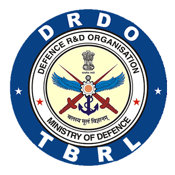

Research Experience
Junior Research Fellow
 Fluid Mechanics Research Laboratory at IIT Ropar
Fluid Mechanics Research Laboratory at IIT Ropar
Research Project: “Wind generation of ocean waves: from primary instabilities to cyclogenesis” under the supervision of Dr. Devranjan Samanta, Assistant Professor, IIT Ropar
- Developing in-house codes to measure the topography of liquid-air interface through Digital Image Correlation and Optical Flow.
- Simulating multi-phase non-Newtonian fluid flow and water-wave generation by wind using OpenFOAM and Basilisk.
- Experimentally studying Leidenfrost phenomenon in impacting alcohol-water droplets on heated surfaces
- Designing and aiding in the fabrication of experimental setups
Links:
Impact Dynamics of Polymeric Drops on Superhydrophobic Surfaces
Experimental Dynamic Leidenfrost Study
Impact of Newtonian Liquid Drop on Heated Plate
About IIT Ropar
Research Intern
 Terminal Ballistics Research Laboratory, Defence Research and Development Organisation
Research Project: “Design and analysis of Hybrid VTOL Tilt-Rotor UAV” under the supervision of Sh. Ashwani Mudgil, Scientist F, TBRL, DRDO
- Planned and executed the design of surface geometry of Tilt-Rotor type, Vertical Take Off and Landing (VTOL) UAV using Onshape & Solidworks
- Optimized the aerodynamic shape of the aircraft using OpenFOAM © and XFLR5 program resulting in 8 times increase in flight range
- Prepared technical reports, design specification documents and engineering drawings; suggested fabrication methods
Links:
Tilt-Rotor Transitional UAV
About TBRL
Research Intern
Surface Engineering Laboratory at IIT Ropar
Research Project: “Study of Medium Density Fibreboard manufacturing using rice-straw based fibres” under the supervision of Dr Harpreet Singh, Professor, IIT Ropar
- Part of an international project, titled “Transforming India’s Green Revolution by Research and Empowerment for Sustainable food Supplies (TIGR2ESS)”, in collaboration with University of Cambridge, UK
- Researched into the specifics of defibration of rice straw, MDF board manufacturing process and the effect of binder resin on various properties of the board and the production costs
- Manufactured rice straw based MDF boards on a lab-scale; Performed standard tests to ascertain the satisfaction of IS 12406 : 2021
Links:
Rice Straw based MDF (Board)
About IIT Ropar